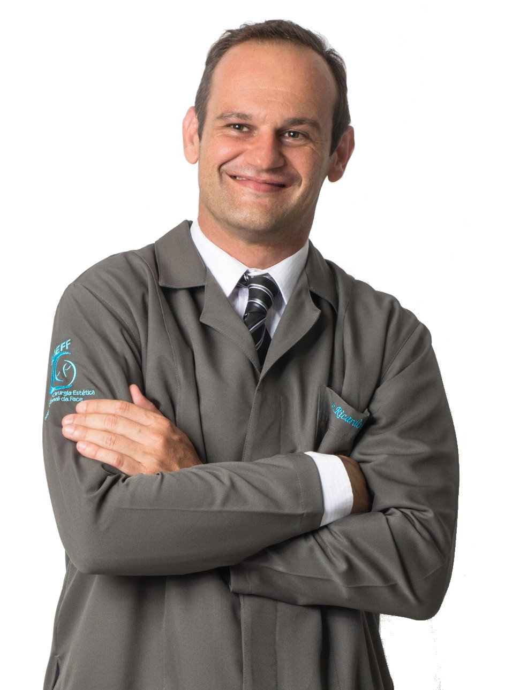
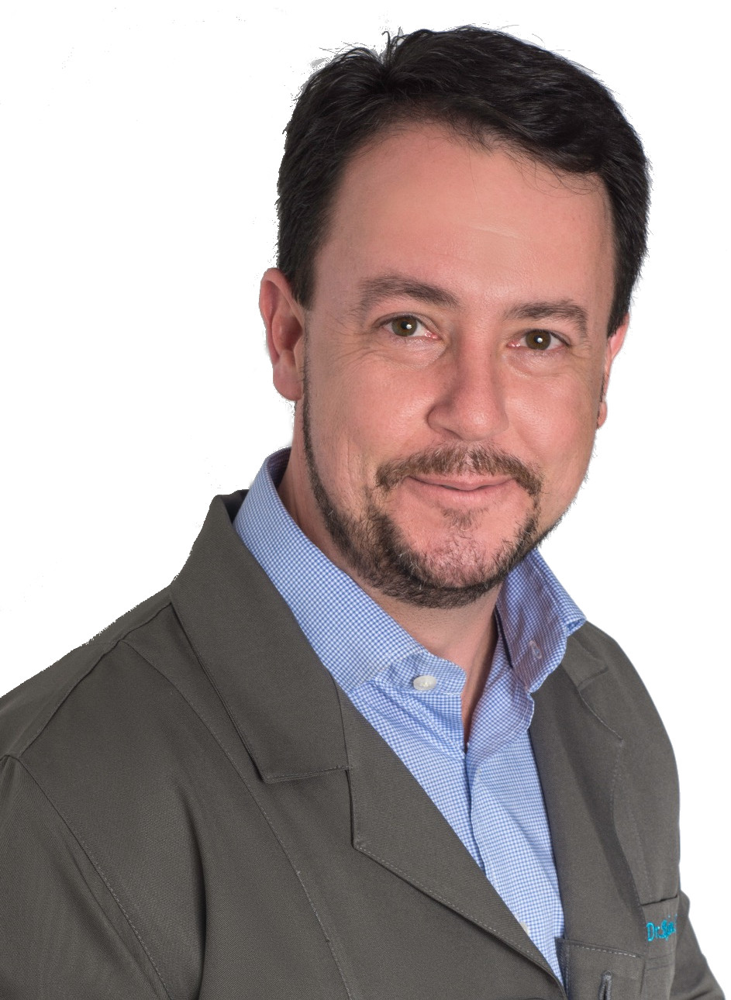

Cirurgia Ortognática
Procedimento cirúrgico odontológico que visa reestabelecer um padrão oclusal e facial normal em pacientes adultos que apresentam um desenvolvimento ósseo da face fora do ideal. O tratamento engloba, além do procedimento cirúrgico, a associação de um tratamento ortodôntico para propiciar melhorias estéticas e funcionais na face dos pacientes.Tratamento de Fraturas da Face
O tratamento de fraturas faciais pode ser feitos de maneira cirúrgica ou não, o diagnóstico adequado determinará qual a melhor modalidade de tratamento para a obtenção do melhor resultado possível. Algumas fraturas da face: Fraturas de mandíbula, Fraturas de maxila, Fraturas de órbita, Fraturas do complexo zigomático, Fraturas do complexo naso-orbito-etmoidal, Fratuas nasais e Fraturas de terço superior de face.Cirurgias de ATM
As cirurgias para o tratamento das disfunções temporomandibulares (DTM) trazem grandes benefícios ao paciente. Após uma avaliação rigorosa e uma vez esgotadas as possibilidades do tratamento conservador, a cirurgia pode ser realizada. Cirurgias de ATM podem ser feitas de maneira convencional ou via artroscopia (vídeo), opção menos invasiva e com recuperação pós-operatória muito mais rápida. A correta indicação deve ser feita pelo profissional.Enxertos e reconstruções ósseas
Enxertos ósseos têm como objetivo possibilitar a colocação de implantes para posterior reabilitação protética. Grandes defeitos ósseos decorrentes de patologias e traumas maxilofaciais também podem ser tratados com esta técnica.Implantodontia
Reabilitações orais extensas com uso de implantes, bem como modalidades cirúrgicas complexas como implantes zigomáticos, lateralização de nervo alveolar inferior e regeneração tecidual guiada. Tais procedimentos podem ser realizadas sob anestesia geral.Tratamento de Patologia Bucal
São diversas as patologias que acometem a cavidade bucal, tanto envolvendo tecido mole, quanto tecido ósseo. O diagnóstico precoce e preciso é de extrema importância para um adequado tratamento e consequentemente um prognóstico favorável para tais doenças.Nosso Corpo Clínico
Marcelo Azevedo de Carvalho
CROSP 86648• Especialista em Cirurgia Bucomaxilofacial
• Especialista em Implantodontia
• Especialista em Odontogeriatria


